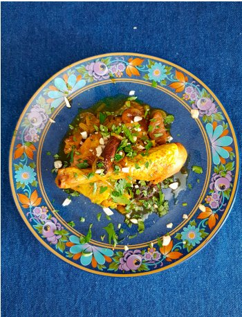

Ароматное куриное рагу с черносливом, курагой и восточными специями. Подавать с кинзой и кешью. Ниже — 8 вариаций рагу из курицы.
Рагу из курицы с гречкой и белыми грибами Пассеровка: лук (1 шт.), сельдерей (2 стебля), морковь (1 шт.), белые сухие грибы (20 г, замоченные в кипятке 10 минут). Крупа — гречка (200 г). Жидкость — вода от грибов + булeн или вода (350–400 мл). За 10 минут до конца — 200 г порубленных шампиньонов. Петрушка.
Рагу из курицы с беконом и фасолью Пассеровка: лук (1 шт.), сельдерей (2 стебля), морковь (1 шт.), бекон (200 г). Травы: розмарин (1 веточка), тимьян (1 веточка), лавровый лист (2 шт.). Фасоль (100 г в сухом виде, сварить) или зелeная чечевица (200 г). Жидкость — булeн или вода (400 мл).
Рагу в стиле чахохбили Пассеровка: лук (2 шт.), чеснок (3 зубчика), болгарский перец (3 шт. разных цветов). Специи: грузинские (хмели-сунели, уцхо-сунели, имеретинский шафран, 1 ч. л.). Вместо жидкости: свежие или консервированные помидоры (400 г). Зелень: кинза, петрушка, базилик.
Рагу из курицы с вином Пассеровка: лук-шалот (4 шт., крупно), чеснок (2 зубчика), морковь (1 шт.), бекон (200 г). Жидкость — красное сухое вино (200 мл). Специи: гвоздика (2 бутона), кардамон (3 коробочки), корица (1 палочка). По желанию — чернослив (10 шт.).
Рагу из курицы из детства Пассеровка: лук (1 шт.), чеснок (2 зубчика), морковь (2 шт.). Жидкость — булeн (300 мл). Овощи: картофель (300 г), цукини (1 шт.). Петрушка и укроп при подаче.
Рагу из курицы с тыквой Без пассеровки. Тыква (300 г). Специи: тимьян (2 веточки), орегано (щепотка), душистый перец (10 горошин), 1 ч. л. коричневого сахара. Жидкость — сок и цедра апельсина + белое сухое вино (всего 300 мл). При подаче: кинза и обжаренные тыквенные семечки.
Рагу в азиатском стиле Пассеровка: лук (1 шт.), чеснок (3 зубчика), имбирь (2 см), стебель лимонного сорго. Специи: листья кафрского лайма (3 шт.), перец чили, куркума (1/2 ч. л.). Жидкость — кокосовое молоко (400 мл). Овощи (300 г): цукини, шампиньоны, спаржа, баклажаны или тыква. Для подачи: кинза и ломтики лайма.
Рагу в испанском стиле Без пассеровки. Курицу обжарить в оливковом масле. Головка чеснока (разделить на зубчики). Специи: шафран. Жидкость: хересный уксус (1 ст. л.), херес (4 ст. л.), вино или вода (150 мл). При подаче: обжаренный миндаль и петрушка.
Рагу с марсалой и апельсинами Пассеровка: красный лук (2 шт.), чеснок (2 зубчика). Травы: тимьян (2 веточки), цедра 1 апельсина. Жидкость: марсала (200 мл), сок 1 апельсина. В конце: зелeные оливки (100 г), дольки апельсина (обжарить на сливочном масле с 1 ч. л. сахара).
Рагу с анчоусами и розмарином Пассеровка: лук-шалот (8 шт., четвертинки), чеснок (4 зубчика). Специи: чили, анчоусы (5 шт.), розмарин (3 веточки), цедра 1 лимона. Жидкость: вермут или белое сухое вино (75 мл).